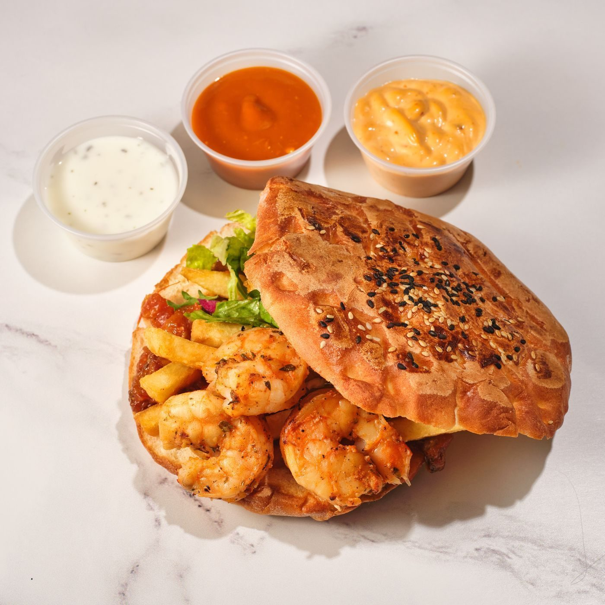
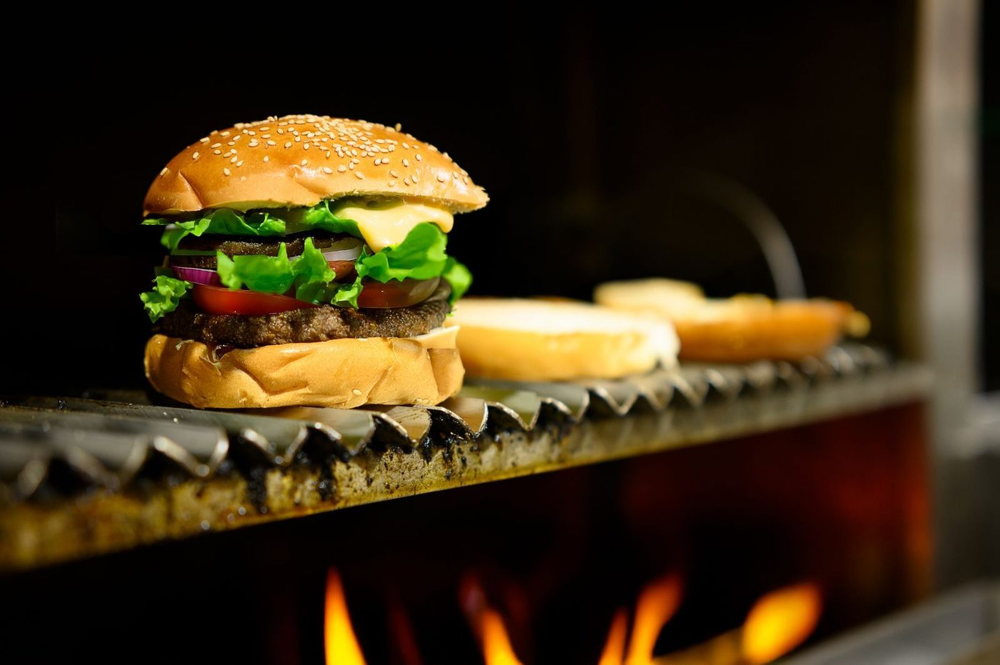

An authentic Argentinian grill and cafe in Little Rock's River Market District, family-owned per its listing.
Buenos Aires Grill and Cafe is an authentic Argentinian grill and cafe in Little Rock's River Market District, family-owned per its listing. The menu includes empanadas in ham and cheese, caprese, and spinach, mixed grills, skirt steak with chimichurri, milanesa suiza, choripan, cuatro leches cake, flan con dulce de leche, and gelato. The restaurant has a patio, live music on weekends, a full bar, reservations, takeout, and delivery.
Call to ask: +1 501-904-2133
Services
| Empanadas | Empanadas in ham and cheese, caprese, and spinach. |
| Mixed grills | Mixed grills. |
| Skirt steak with chimichurri | Skirt steak with chimichurri. |
| Milanesa suiza | Milanesa suiza. |
| Choripan | Choripan. |
| Cuatro leches cake, flan con dulce de leche, gelato | Cuatro leches cake, flan con dulce de leche, and gelato. |
| Patio, weekend live music, full bar | A patio, live music on weekends, and a full bar. |
| Reservations, takeout, delivery | Reservations, takeout, and delivery. |
Photos


All photos on this page are stock photos, not photos of this business.